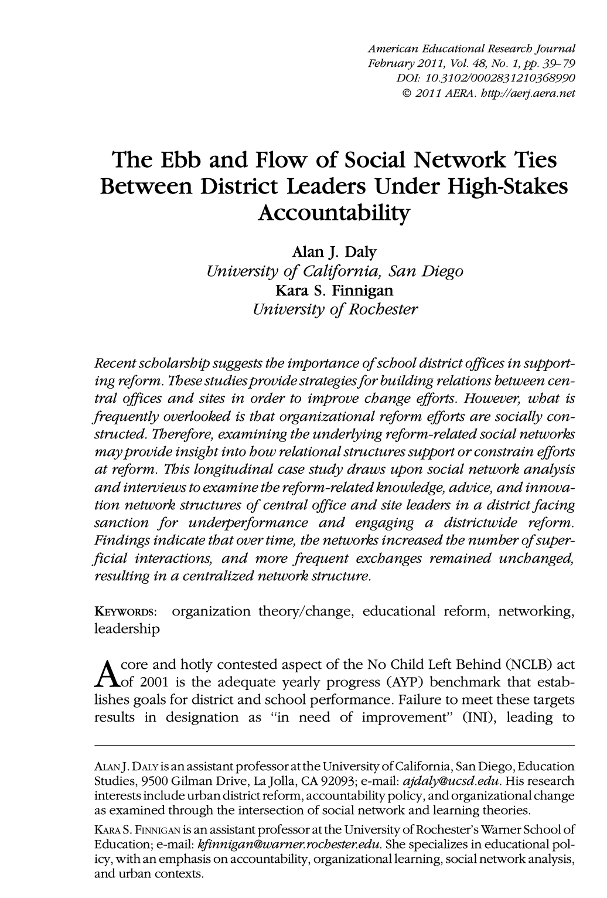
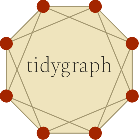
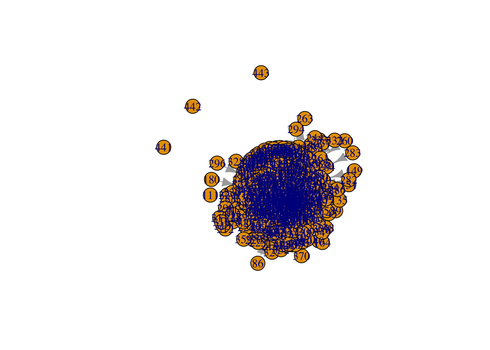
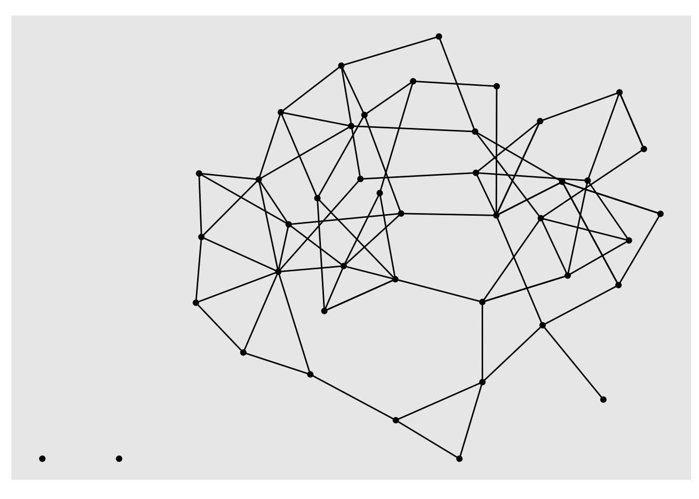
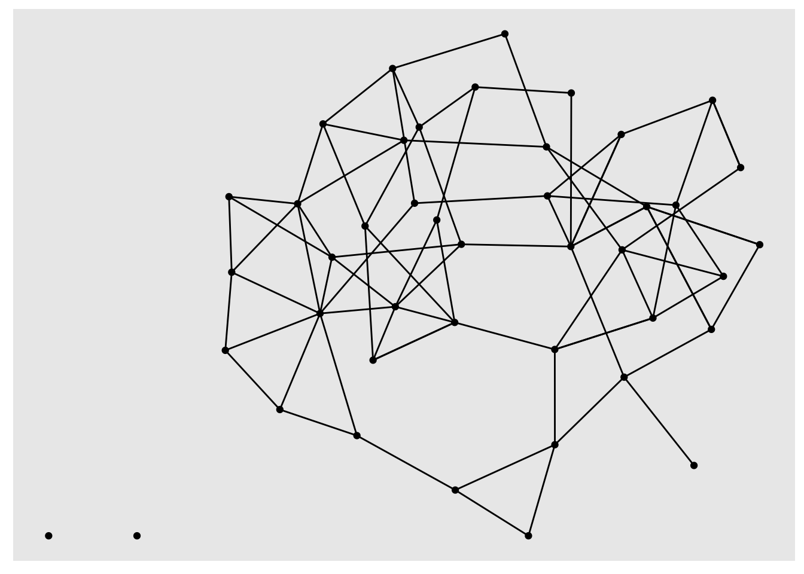
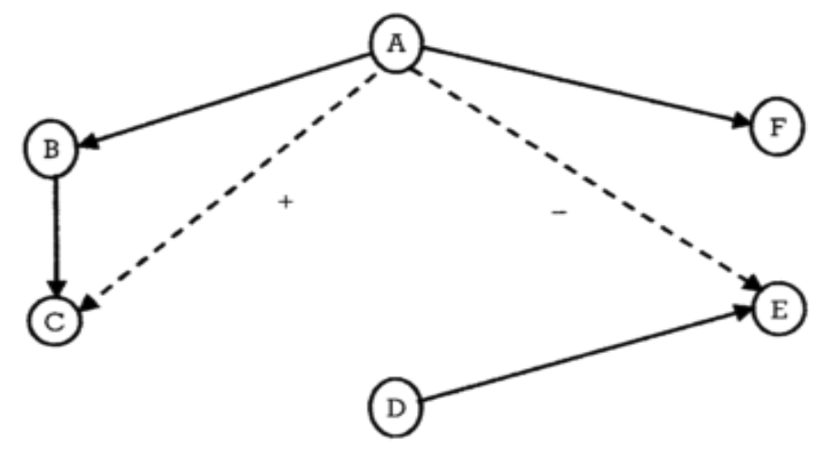

Our Unit 2 Case Study: Collaboration Ties over Time introduces the research of Dr. Alan Daly and centers around the impact No Child Left Behind reform efforts on school and district leadership networks. In this unit we move beyond visual depictions of networks from our previous SNA case study and learn to describe networks using common network-level measures. Our analyses are guided by research conducted by Daly and Finnagan Daly and Finnigan (2011) who examined the ebb and flow of social network ties between district leaders under high-stakes accountability. As we work through each step of the data-intensive workflow (Krumm, Means, and Bienkowski 2018), we will focus on the following topics:
Prepare: Prior to analysis, we’ll take a look at the context from which our data came and load various R packages for data science and network analysis.
Wrangle: In section 2 we once make use of the {readxl} and {tidygraph} packages to import and prepare relational data stored as as an adjacency matrix.
Explore: In our prior case study, we indirectly used the {igraph} package on which {tidygraph} depends. In section 3, we use {igraph} directly to calculate a range of network-level measures to describe and compare collaboration networks over time.
Model: While we don’t do any modeling of our data in this case study, we dive a little deeper into work of Daly and Finnagan Daly and Finnigan (2011) to see how modeling can be used to examine longitudinal network data.
Communicate: Finally, we prepare a simple “data product” consisting of a data visualization and/or table that highlights some key findings from our analysis.
1a. Review the Research

Daly, A. J., & Finnigan, K. S. (2011). The ebb and flow of social network ties between district leaders under high-stakes accountability. American Educational Research Journal, 48(1), 39-79.
Abstract
Recent scholarship suggests the importance of school district offices in supporting reform. These studies provide strategies for building relations between central offices and sites in order to improve change efforts. However, what is frequently overlooked is that organizational reform efforts are socially constructed. Therefore, examining the underlying reform-related social networks may provide insight into how relational structures support or constrain efforts at reform. This longitudinal case study draws upon social network analysis and interviews to examine the reform-related knowledge, advice, and innovation network structures of central office and site leaders in a district facing sanction for underperformance and engaging a districtwide reform. Findings indicate that over time, the networks increased the number of superficial interactions, and more frequent exchanges remained unchanged, resulting in a centralized network structure.
üëâ Your Turn ‚§µ
Take a look at the article The Ebb and Flow of Social Network Ties Between District Leaders Under High-Stakes Accountability located in the lit folder of your files pane and answer the following questions:
What research questions were the authors of this study trying to address and why did they consider these questions important?
How were participants selected for this study and what was the rationale?
How did the authors collect social network data for this study and what specific information about actors and ties were collected?
1b. Load Libraries
Recall that R packages, sometimes referred to as libraries, are shareable collections of R code that can contain functions, data, and/or documentation and extend the functionality of R. Before loading an R package, you must first make sure it has been installed in your environment. You can always check to see which packages have already been installed and loaded into RStudio Cloud by looking at the the Files, Plots, & Packages Pane in the lower right hand corner.
Core SNA Packages
tidygraph üì¶

The {tidygraph} package is a huge package that exports 280 different functions and methods, including access to almost all of the dplyr verbs plus a few more, developed for use with relational data. While network data itself is not tidy, it can be envisioned as two tidy tables, one for node data and one for edge data. The {tidygraph} package provides a way to switch between the two tables and uses dplyr verbs to manipulate them. Furthermore it provides access to a lot of graph algorithms with return values that facilitate their use in a tidy workflow.
ggraph üì¶
Created by the same developer as {tidygraph}, {ggraph} – pronounced gg-raph or g-giraffe hence the logo – is an extension of {ggplot} aimed at supporting relational data structures such as networks, graphs, and trees. Both packages are more modern and widely adopted approaches data visualization in R.
While ggraph builds upon the foundation of ggplot and its API, it comes with its own self-contained set of geoms, facets, etc., as well as adding the concept of layouts to the grammar of graphics, i.e. the “gg” in ggplot and ggraph.
igraph üì¶
Both {tidygraph} and {ggraph} depend heavily igraph network analysis package. The main goals of the igraph package and the collection of network analysis tools it contains are to provide a set of data types and functions for:
pain-free implementation of graph algorithms,
fast handling of large graphs, with millions of vertices (i.e., actors or nodes) and edges,
allowing rapid prototyping via high level languages like R.
New Packages
readxl üì¶
The {readxl} package makes it easy to get data out of Excel and into R. Compared to many of the existing packages (e.g. gdata, xlsx, xlsReadWrite) readxl has no external dependencies, so it’s easy to install and use on all operating systems. It is designed to work with tabular data.
Since one of our data wrangling steps in the next section is importing network matrices stored in excel files, this package will come in handy.
üëâ Your Turn ‚§µ
Use the code chunk below to load the tidyverse, igraph, tidygraph, ggraph, and readxl packages that we’ll be using in this case study:
Attaching package: 'igraph'
The following objects are masked from 'package:dplyr':
as_data_frame, groups, union
The following objects are masked from 'package:purrr':
compose, simplify
The following object is masked from 'package:tidyr':
crossing
The following object is masked from 'package:tibble':
as_data_frame
The following objects are masked from 'package:stats':
decompose, spectrum
The following object is masked from 'package:base':
union
library(tidygraph)
Attaching package: 'tidygraph'
The following object is masked from 'package:igraph':
groups
The following object is masked from 'package:stats':
filter
library(ggraph)
2. Wrangle
In general, data wrangling involves some combination of cleaning, reshaping, transforming, and merging data(Wickham and Grolemund 2016). As highlighted in Estrellado et al. Estrellado et al. (2020), wrangling network data can be even more challenging than other data sources since network data often includes variables about both individuals and their relationships. For data wrangling in this unit, we’re keeping it simple since working with relational data, especially in the form of matrices, is a bit of a departure from our working with rectangular data frames.
2a. Import Data
One of our primary goals for this case study is to examine how collaboration networks among school and district leaders changed over time. To do so, we’ll need to import two Excel files from the Social Network Analysis and Education companion site. Both files contain edges stored as a square matrix (more on this later) for the first and third year of a study examining the impact of national reform efforts (Daly and Finnigan 2011).
These files are included in the data folder of your R Studio project. A description of each file from the companion website is linked above and each data file is linked below:
year_1_collaboration.xlsx This adjacency matrix reports on “collaboration” ties among 43 school leaders in year 1 of a three-year study. This is a directed valued (weighted) network measured on five-point scale ranging from 0 to 4, with higher values indicating more frequent collaborations (1–2 times/week). These data are used throughout Chapter 9.
year_3_collaboration.xlsx This adjacency matrix reports on “collaboration” ties among 43 school leaders in year 3 of a three-year study. This is a directed valued (weighted) network measured on five-point scale ranging from 0 to 4, with higher values indicating more frequent collaborations (1–2 times/week).
Recall from above that our relations, or edges, are stored as a valued adjacency matrix in which columns and rows consist of the same actors and each cell contains information about the tie between each pair of actors. In our case, the tie is a directed and valued “arc” where the value indicates the frequency of collaboration.
Let’s use the read_excel() function to import the year_1_collaboration.xlsx file, add an argument setting the column names to FALSE since our file is a simple matrix with no header or column names, and assign the matrix to a variable named year_1_collaboration:
R Studio Tip: Type ?read_excel into the console and check the arguments section to examine the different arguments that can be used with this function.
As you can see, we have a 43 x 43 “tibble” or data table representing our collaboration ties. In Section 2, we’ll learn how to restructure this data into a formal matrix and then convert to a network class R object so we can explore our data through network visualization and analyses.
üëâ Your Turn ‚§µ
Use the code chunk below to import the Year 3 collaboration network located in data folder of your R project and then inspect your newly created object to make sure it imported as expected.
As noted above, before we can begin exploring our data through network visualization and analysis, we must first restructure our data into a formal matrix and then convert to a network class R object required by the igraph, tidygraph, and ggraph packages.
However, one thing you may have noticed from our inspection of the data above is that our data table is missing the names of the school leaders in our network, which are needed for determining dyads in our network. R has packages for creating random names to help anonymize data, but to keep things simple, we’ll just assign the numbers 1-43 as names for our rows and columns.
rownames(year_1_collaboration) <-1:43
Warning: Setting row names on a tibble is deprecated.
colnames(year_1_collaboration) <-1:43
You may have seen a warning stating: Setting row names on a tibble is deprecated. You can ignore that for now but it’s basically telling us these functions are old we we need to use newer function or our code will some day stop working.
Again, let quickly inspect our year_1_collaboration data table to see if this worked:
As you can see, we now have names for our rows and columns corresponding to each school leader in our network. So we can see that leader 1 collaborated with leader 3 and with a frequency of “3” but obviously did not collaborate with 2 as indicated by the “0” in the corresponding cell. Note that leader 3 also indicated that they collaborated with 1, but on a slightly more frequent basis as indicated by the “4” in the corresponding cell.
Convert to Matrix Object
Now that we have names included for our rows and columns, we need to convert our data table, or tibble, to a formal matrix class object. To do so is relatively simple using the as.matrix() function built into R.
year_1_matrix <-as.matrix(year_1_collaboration )
The word “class” and “object” have been used quite a bit in this case-study and warrant a brief explanation. Classes and objects are basic concepts of Object-Oriented Programming environments like R. An object is simply a data structure that has some methods and attributes. Everything in R is essentially an object. A class is just a blueprint or a sketch of these objects. It represents the set of properties or methods that are common to all objects of one type.
Let’s use the class() function on the year_1_collaboration and year_1_matrix to see the types of objects we just created:
class(year_1_collaboration)
[1] "tbl_df" "tbl" "data.frame"
class(year_1_matrix)
[1] "matrix" "array"
Great! We can now see that our year_1_matrix is formally an object of the “matrix” class.
Convert to Graph Object
Our final step before we’re able to begin exploring our data is to convert our matrix to a network object recognized by the {igraph} and {tidygraph} packages. The as_tbl_graph() function can easily convert relational data from all common network data formats such as matrices, network, phylo, dendrogram, data.tree, graph, etc.
Run the following code to convert our matrix to directed network graph and save as a new object called year_1_network:
Warning in (is.null(rownames(x)) && is.null(colnames(x))) || colnames(x) == :
'length(x) = 43 > 1' in coercion to 'logical(1)'
Again, let’s inspect our new object:
year_1_network
# A tbl_graph: 43 nodes and 82 edges
#
# A directed simple graph with 3 components
#
# Node Data: 43 × 1 (active)
name
<chr>
1 1
2 2
3 3
4 4
5 5
6 6
# … with 37 more rows
#
# Edge Data: 82 × 3
from to weight
<int> <int> <dbl>
1 1 3 3
2 3 1 4
3 3 24 3
# … with 79 more rows
As you can see, our year_1_network provides a range of information about out network including network size, type, number of components, and a preview of the node and edge lists that it created. The node and edge lists are treated just like a typical data frame and can now be used with other tidyverse packages and functions to create new actor-level network variables like degree, reciprocity, and centrality measures.
üëâ Your Turn ‚§µ
Use the code chunk below to complete the following data wrangling steps for our Year 3 collaboration network from the Excel file you imported earlier:
Add row and column names to the data frame;
Convert the resulting data frame to a matrix class object and check to confirm that it is indeed a matrix;
Convert the matrix to a network graphs object with directed edges;
Inspect the Year 3 collaboration network and answer the questions after the code chunk.
Warning in (is.null(rownames(x)) && is.null(colnames(x))) || colnames(x) == :
'length(x) = 43 > 1' in coercion to 'logical(1)'
year_3_network
# A tbl_graph: 43 nodes and 1314 edges
#
# A directed multigraph with 1 component
#
# Node Data: 43 × 1 (active)
name
<chr>
1 1
2 2
3 3
4 4
5 5
6 6
# … with 37 more rows
#
# Edge Data: 1,314 × 3
from to weight
<int> <int> <dbl>
1 1 2 2
2 1 3 4
3 1 4 3
# … with 1,311 more rows
Section 2 Questions:
What is the size of the Year 3 collaboration network?
How many components are in this network?
How many nodes and edges variables are in our tidy graph and what does each variable (e.g., weight) represent?
How does collaboration in Year 3 compare to Year 1 and what inferences might you already be able to make just based on the size of the two networks?
3. Explore
Relevant to our case study of school leader collaboration, Carolyn notes in SNA and Education Carolan (2014) that:
… to address questions that probe a network’s dynamics (i.e., its change over time), it is necessary to first figure out what the network looks like at one point in time, what is commonly referred to as the network’s topography.
In order to describe a network’s topography, social network researchers utilize an array of algorithms and indices to describe both visually and numerically different characteristics of social networks. These algorithms and indices rely on both simple and somewhat sophisticated mathematical computation.
In this section we revisit the {tidygraph} and {ggraph} packages for creating sociograms and computing basic node and edge-level measures, and then introduce some key functions from the {igraph} package for obtaining complete network-level measures.
3a. Visually Describe the Network
One of the defining characteristics of the social network perspective is its use of graphic imagery to represent actors and their relations with one another. To emphasize this point, Carolyn (2013) reported that:
The visualization of social networks has been a core practice since its foundation more than 90 years ago and remains a hallmark of contemporary social network analysis.
Network visualization can be used for a variety of purposes, ranging from highlighting key actors to even serving as works of art. Katya Ognyanova’s also excellent tutorial on Static and Dynamic Network Visualization with R helps illustrate the variety of goals a good network visualization can accomplish.
Recall from our previous SNA case study examining Twitter networks surrounding the Common Core State Standards that we introduced the dead simple plot() function built into R to quickly generate a sociogram showing the nodes and edges in our network.
Let’s supply our year-1-network object as the first argument of this function and see what it produces:
plot(year_1_network)

While not the most aesthetically pleasing plot, it definitely is functional. As indicated by our tidy graph output from section 1, we can see that there is one large network component and two additional components consisting of isolated school leaders with no collaboration ties.
If this had been a larger network with more nodes and edges, however, the utility of the basic plot() function would evaporate quickly. For example, try this function out with the Year 3 network in the console and see what it produces.
Fortunately, the {ggraph} package includes a plethora of plotting parameters for graph layouts, edges and nodes to improve the visual design and readability of network graphs.
Note: If you’re having trouble seeing the plot you can run the code in the console and see the plot in the Viewer pane or click the little arrow/window icon in the output of the code chunk to open the plot in a new window and resize.
Sociograms with ggraph
One thing to keep in mind when building a network viz with the {ggraph} package is that just like it’s {ggplot} counterpart for making more traditional charts and graphs, there is a minimal code template for producing a basic plot. Specifically, ggraph requires 3 main functions
ggraph() takes care of setting up the plot object along with creating the layout of the graph (default = “stress”).
geom_node_*() functions and their associated arguments add and modify the nodes of the network plot.
geom_edge_*() functions and their associated arguments add and modify the edgez of the network plot.
Like the basic plotting function above, ggraph has a similar autograph() function for automatically generating a simple sociogram to get a quick snapshot of your network. Run the following code supplying our year_1_network object as the first argument for this function:
autograph(year_1_network)

As you can see, this produces a very basic plot that includes our network nodes and edges with minimal styling.
Within this function, however, are the three core functions noted above that can be modified though different arguments or by adding additional layers of functions to change the visual aesthetics of your sociogram to highlight key characteristics of the network, like edge weight or central actors.
Let generate the same basic plot above but explicitly call our ggraph, node, and edge functions:
Warning: Using the `size` aesthetic in this geom was deprecated in ggplot2 3.4.0.
ℹ Please use `linewidth` in the `default_aes` field and elsewhere instead.

We won’t spend a lot of time on polishing our graph here. We’ll save that effort for when we are ready to communicate our findings to a specific audience, but lets make some quick functional and aesthetic changes: Run the following code to:
Change the graph layout to the Fruchterman-Reingold (FR) layout using the layout = "fr" argument to help highlight areas of clustering;
Change the size of our nodes using the size = 3 argument to make them more visible;
Add color to our edges based using the aes(colour = weight) argument to highlight more frequent collaborations; and,
Add the theme_graph() layer to remove the gray background.
That is perhaps slightly better, but before sharing with an education partner, I would likely do quite a bit more clean up to highlight key findings specific to network measures that we’ll explore in the next section. For example, I might change the size of nodes for school leaders based on measures of centralization to highlight more central actors in the network and add arrows to indicate directionality of the ties since this is a directed network.
üëâ Your Turn ‚§µ
Use the code chunk below created a simple sociogram for the Year 3 collaboration network and answer the questions that follow:
How does the Year 3 collaboration network compare to Year 1? What are some similarities and differences?
How might you modify this graph to make it more insightful and useful? For ideas check out these nework viz tutorials here, here and here.
3b. Describe the Network Mathematically
This section include some of the most common measures used to describe the features of complete networks, as well was .
Network-level structural measures are those that are calculated from the entire network. Therefore, they provide an excellent snapshot of the network’s structure—the pattern of relations among the network’s actors.
In addition to providing an overall summary of the network, these measures provide a concrete means to compare relations such as whether the friendship, social support, and advice seeking networks within the same fraternity, for example, are comparable. In our case study, for example, were are
1. Network Size
One simple but important property of a social network is its size, or the number of nodes and edges in a network. As Carolan notes:
Size plays an important role in determining what happens in the network— what resources are exchanged among actors, for example… Size affects other network measures, but on a conceptual level, it influences the structure of relations, as actors only have so many resources and capacities for creating and maintaining ties with others.
As we saw in the previous section, the year_1_network output provided us with basic information about our networks size, including the number of nodes and edges in our network. The {igraph} package also has some basic functions for retrieving the number of nodes and edges in a network.
Run the following code chunk to use the gorder() and gsize() functions obtain the number of vertices and edges respectively:
gorder(year_1_network)
[1] 43
gsize(year_1_network)
[1] 82
2. Centralization
A key structural property of complete networks, and often the focus of network studies is the concept of centralization, or the extent to which relations are focused on one or a small set of actors. Centralization is an important concept in network because, as Carolan notes:
Central actors likely wield a disproportionate amount of influence on the network. Therefore, high centralization provides fewer actors with more power and control.
Centralization can be based on a number of different measures, but degree is one of the most common. Degree refers to the number of ties an actor either sends (out-degree), receives (in-degree), or in the case of a non-directed network or both sent and received in a directed network, simply just “degree” for all actors to which one is connected.
The centr_degree() function in {igraph} provides a centralization score based on the metric selected, as well as the degree for each actors in the network. Let’s first take a look at the centralization measure based on number of actors individuals have ties with regardless of directionality:
The first variable $res provides node-level centrality scores. So for example, the first school leader in our network is connected to 5 other actors in the network. The $centralization variable provides our actual centrality score, which is quite small suggesting a very decentralized network. And the final $theoretical_max provides the maximum theoretical graph level centralization score for our graph based on the number of vertices.
Let’s also take a quick look at centralization scores for in-degree and out-degree:
Again, we still have a very decentralize graph, though slightly more centralized around in-degree.
While our primary concern is complete network-level measures so we can compare Year 1 & 3 networks, obtaining node-level measures is also very useful for helping to describe the network, particularly for visualization. For example, we might want to adjust the size of nodes in a network based on degree, so those actors with more connections stand out more prominently.
The {tidygraph} package has an unique function called activate() that allows us to treat the nodes and edges in our network object as if they were a standard data frame that we can then apply standard tidyverse functions to like select(), filter(), and mutate().
The latter function, mutate(), can be use to create new variables for node-level measures of degree, in-degree, and out-degree using the centrality_degree() function in the {tidygraph} package.
Run the following code to add each actor’s degree to our Year 1 collaboration network and assign the output year_1_network again so the results are saved:
# A tbl_graph: 43 nodes and 82 edges
#
# A directed simple graph with 3 components
#
# Node Data: 43 × 2 (active)
name degree
<chr> <dbl>
1 1 5
2 2 0
3 3 5
4 4 3
5 5 3
6 6 3
# … with 37 more rows
#
# Edge Data: 82 × 3
from to weight
<int> <int> <dbl>
1 1 3 3
2 3 1 4
3 3 24 3
# … with 79 more rows
Now we could adjust the size of more central actors in our sociogram from above like so to highlight the full range of collaboration ties in our network:
Since we know the number of ties, or edges, in our network, we can examine the overall density of our network, which is directly linked to network size. As Carolan explains:
Density refers to the number of ties in the network reported as a fraction of the total possible number of ties… The closer this number is to 1.0, the denser the network.
The igraph packages has two different function for calculating the density of a network, edge_density() and graph.density(), but both yield the exact same result. The edge_density() function is the more recent function and should be used, but let’s try them both out:
edge_density(year_1_network)
[1] 0.04540421
graph.density(year_1_network)
[1] 0.04540421
As you can see, our collaboration network in Year 1 has a VERY low density, which suggests that collaboration in this network is quite limited and may impact the flow of information, resources, and innovations among school leaders.
4. Reciprocity
Reciprocity is an important measure because it reveals the direction through which resources in networks flow and whether or not it flows in both directions. The tendency towards reciprocity in most networks, sometimes referred to as the “norm” of reciprocity, has been acknowledge by ancient writers such as Cicero who stated:
There is no duty more indispensable than that of returning a kindness… all men distrust one forgetful of a benefit.
At the network-level, reciprocity is defined as reciprocity is a measure of the likelihood of vertices in a directed network to be mutually linked. Using the reciprocity() function, we can directly calculate this measure:
reciprocity(year_1_network)
[1] 0.1707317
As illustrated by the reciprocity measure above, the tendency towards reciprocated collaboration ties is, surprisingly, very low in our Year 1 network.
And if we wanted to highlight this lack of reciprocity in a network visual, we could use the edge_is_mutual() function to create a new edge variable called reciprocated that indicates whether the tie is mutual or asymmetric.
As you can see, there only appear to be seven dyads with reciprocated ties!
5. Transitivity & Clustering
Transitivity, also known as the “friend of a friend” phenomenon, focuses on triads, or any “triple” of actors, rather than dyads like reciprocity. Just like a networks tendency towards reciprocity, there is also a tendency toward transitivity. For example, in the figure below Teacher A collaborates with Teacher B and Teacher B collaborates with Teacher C, then Teacher A is more likely at some point to collaborates with Teacher C and “complete” the triangle and less likely to collaborate with Teacher E since they do now share a connection:

As Carolan points out, establishing a network’s transitivity is important, as it is theoretically connected to actors’ tendencies to divide into exclusive subgroups or cluster over time, especially around positive relations such as friendship. While the algorithms behind network transitivity are not trivial, the defining network transitivity is rather straightforward:
Transitivity measures the probability that the adjacent vertices of a vertex are connected. This is sometimes also called the clustering coefficient.
The transitivity() function provides a convenient means to calculate a network-level transitive measures:
transitivity(year_1_network)
[1] 0.2435897
For our particular network, a relatively small value of 24.4% is not too surprising since this is the start of the research study and since the density of our network overall is very low.
6. Diameter & Distance
Whereas transitivity focuses on the importance of certain configurations of triads, diameter and distance are more straightforward. A network’s diameter simply refers to the longest path between any two actors. A related measure is the average path length, which measures the mean distance between all pairs of actors in the network.
The two functions for computing diameter and average path length are diameter() and mean_distance() respectively. Let’s apply both of these to our year_1_network object:
diameter(year_1_network)
[1] 42
mean_distance(year_1_network)
[1] 16.43005
Carolan notes that both diameter and average path length are important network-level structural properties. Similar to diameter and distance measures for our Year 1 network above, he notes that a network with a large diameter and small average path length suggests a structure in which there are parts of the network that some network actors may be unable to access.
üëâ Your Turn ‚§µ
Use the code chunk below to calculate the following measures for the Year 3 collaboration newtwork, then answer the questions below:
How do network-level measures for Year 1 and Year 3 collaboration compare? What are some similarities and differences?
What do these measures suggest about changes in collaboration among school leaders over time? In your response, cite some specific measures from Year 1 & 3 as evidence for your conclusions.
4. Model
A developing area of network research is the advancement of statistical models and tools to examine network change over time (Carolan 2014). These models are used to empirically test if changes in key structure measures are statistically significant, and also explain potential mechanisms driving those changes. Stochastic actor-based models, for example, are a family of models that have the purpose of representing network dynamics on the basis of observed longitudinal data. These stochastic actor-based models allow users to test hypotheses about these tendencies toward reciprocity, homophily, and transitivity over time and to estimate parameters expressing their strengths while controlling for other tendencies (“confounders”).
üëâ Your Turn ‚§µ
Take a look at the article The Ebb and Flow of Social Network Ties Between District Leaders Under High-Stakes Accountability located in the lit folder of your files pane and answer the following questions:
What model(s) did Daly and Finnagan use in their longitudinal case study to examine changes in reform-related knowledge, advice, and innovation network structures?
What findings about network changes (list 2-3) did you find most interesting and why?
5. Communicate
The final(ish) step in our workflow/process is sharing the results of analysis with wider audience. Krumm et al. (2018) outlined the following 3-step process for communicating with education stakeholders what you have learned through analysis:
Select. Communicating what one has learned involves selecting among those analyses that are most important and most useful to an intended audience, as well as selecting a form for displaying that information, such as a graph or table in static or interactive form, i.e. a “data product.”
Polish. After creating initial versions of data products, research teams often spend time refining or polishing them, by adding or editing titles, labels, and notations and by working with colors and shapes to highlight key points.
Narrate. Writing a narrative to accompany the data products involves, at a minimum, pairing a data product with its related research question, describing how best to interpret the data product, and explaining the ways in which the data product helps answer the research question.
For your Independent Analysis assignment next week, you will have an opportunity to create a simple “data product” designed to illustrate key insights about about the student and/or teacher reported middle school friendship networks.
For now, we will wrap up this assignment by converting our work into a webpage that can be used to communicate your learning and demonstrate some of your new R skills To do so, you will need to “Knit” your document by clicking the drop down arrow next to the ball of yarn in the menu bar at that the top of this markdown file, and then selecting “Knit top HTML” or another preferred output format. This will do two things:
it will check through all your code for any errors; and,
it will created a file in your directory that you can use to share you work through GitHub Pages, RPubs (see screeshot below), or any other preferred means.
Congratulations - you’ve completed the Unit 2 case study!
Daly, Alan J, and Kara S Finnigan. 2011. “The Ebb and Flow of Social Network Ties Between District Leaders Under High-Stakes Accountability.”American Educational Research Journal 48 (1): 39–79.
Estrellado, Ryan A., Emily A. Freer, Jesse Mostipak, Joshua M. Rosenberg, and Isabella C. Velásquez. 2020. Data Science in Education Using r. Routledge. https://doi.org/10.4324/9780367822842.
Wickham, Hadley, and Garrett Grolemund. 2016. R for Data Science: Import, Tidy, Transform, Visualize, and Model Data. " O’Reilly Media, Inc.". https://r4ds.had.co.nz.